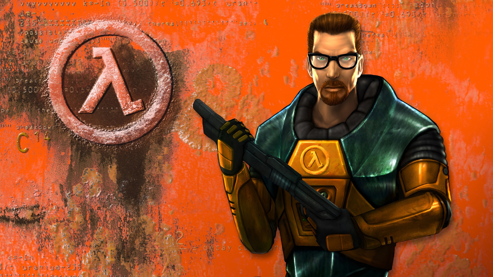
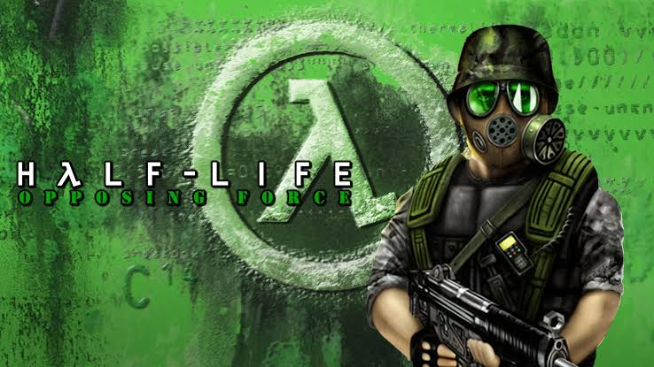
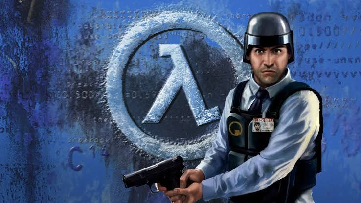
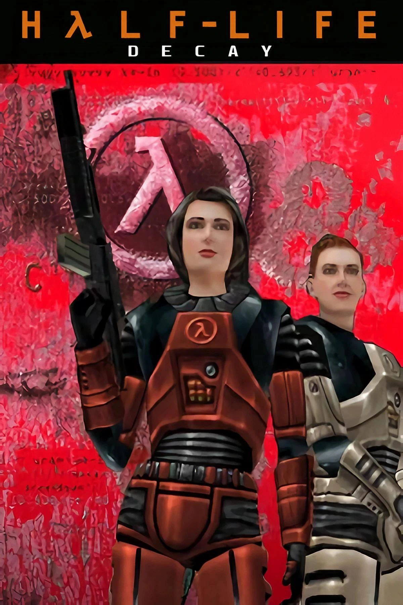
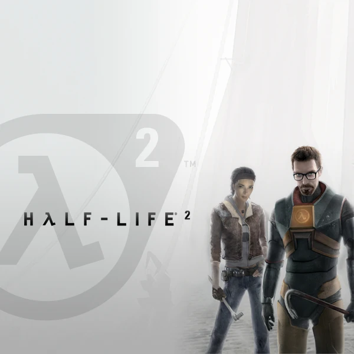
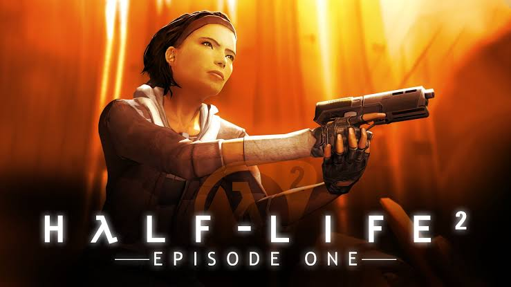
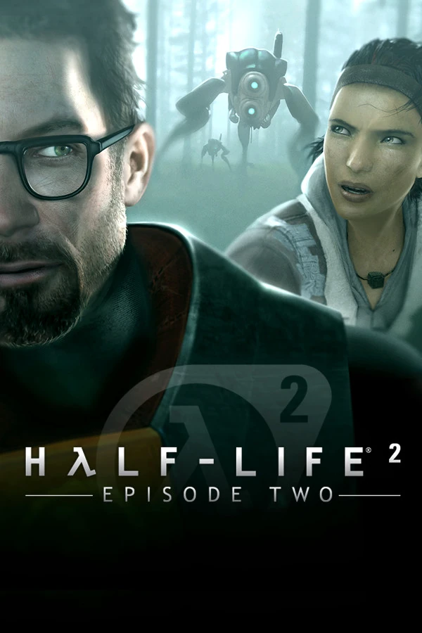
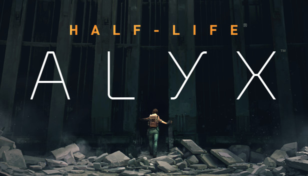
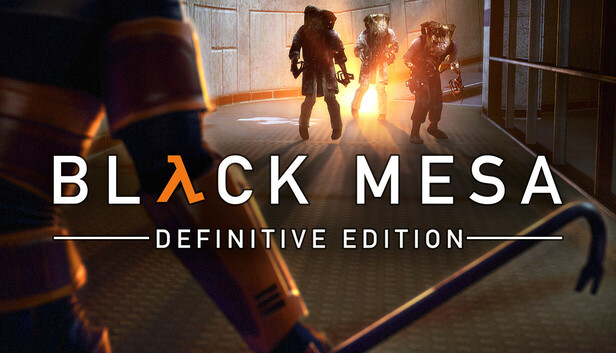

บันทึกเหตุการณ์และเนื้อเรื่องของเกมระดับตำนาน

จุดเริ่มต้นของหายนะแห่งศูนย์วิจัย Black Mesa และการต่อสู้ครั้งแรกของ ดร.กอร์ดอน ฟรีแมน
อ่านเนื้อเรื่อง
มุมมองจากสิบโท Adrian Shephard แห่งกองกำลัง HECU ที่ถูกส่งมาล้างบาง Black Mesa
อ่านเนื้อเรื่อง
เอาชีวิตรอดผ่านสายตาของ Barney Calhoun เจ้าหน้าที่รักษาความปลอดภัยของศูนย์วิจัย
อ่านเนื้อเรื่อง
เรื่องราวของ ดร.จินา ครอส และ ดร.โคเลตต์ กรีน สองนักวิทยาศาสตร์หญิงผู้ทำหน้าที่หลังฉาก
อ่านเนื้อเรื่อง
การตื่นขึ้นมาใน City 17 และการลุกฮือของมนุษยชาติเพื่อต่อต้านเผ่าพันธุ์ต่างดาว Combine
อ่านเนื้อเรื่อง
การหลบหนีออกจาก City 17 ที่กำลังจะพังทลายของกอร์ดอนและอเล็กซ์
อ่านเนื้อเรื่อง
การเดินทางฝ่าสมรภูมิป่าเขาเพื่อนำข้อมูลสำคัญไปส่งให้ฐานทัพฝ่ายต่อต้านที่ White Forest
อ่านเนื้อเรื่อง
เหตุการณ์ก่อนภาค 2 การต่อสู้อย่างลับๆ ของ Alyx Vance และพ่อของเธอเพื่อความอยู่รอด
อ่านเนื้อเรื่อง
โปรเจกต์ Remake สุดยิ่งใหญ่ที่ชุบชีวิตเกมต้นฉบับให้กลับมาสวยงามและสมบูรณ์แบบยิ่งขึ้น
อ่านเนื้อเรื่อง